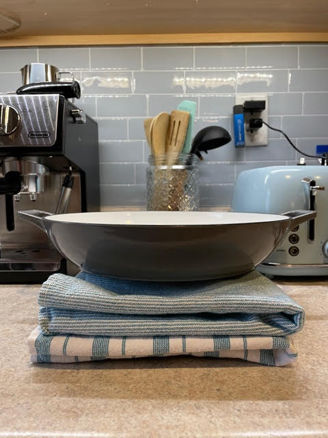
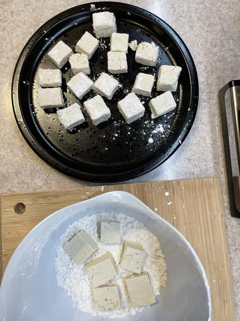
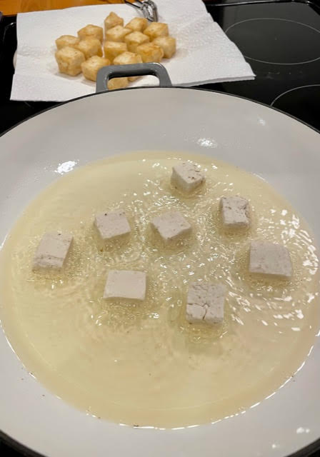
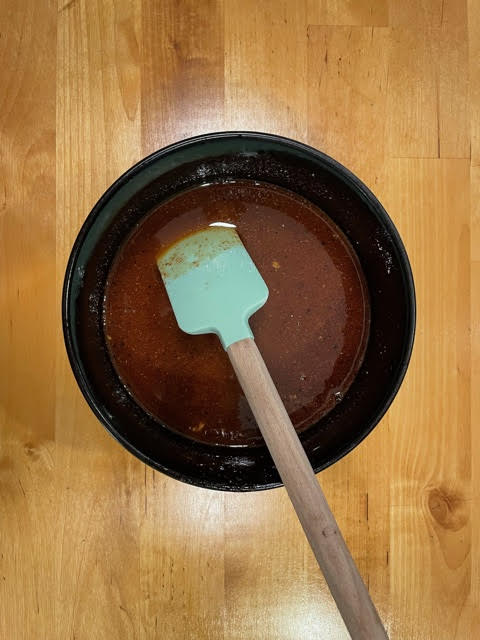
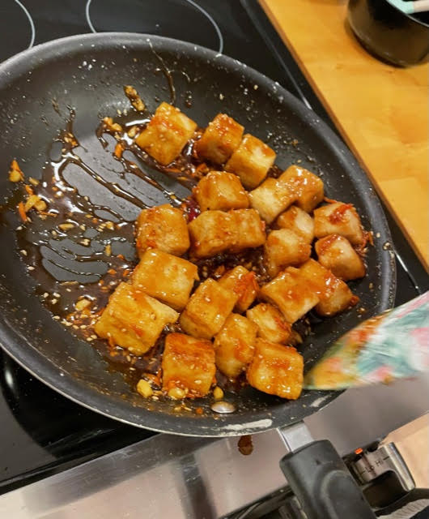
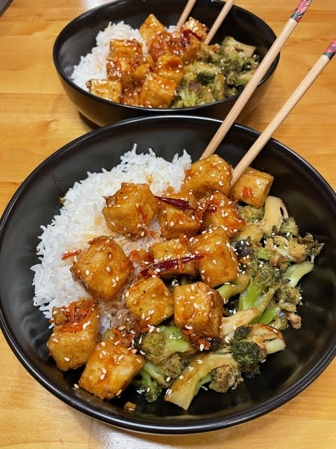

Cooking
My wife and I are self-proclaimed foodies. Now for many people that might mean going out to all of the fancy restaurants and spending
lots of money on all of the menu, and while we do love to do that from time to time, our wallet prefers when we cook our own meals at
home. We consider ourselves pretty good homecooks and are willing to try our hands at all sorts of cuisine ranging from Cajun to
Korean to German.
Much of our diet today consists of plant-based vegan food as well. While vegan food tends to have a bit of a stigma around it of being
bland and only veggies, we have found recipes that buck that trend and are tough rivals for their non-vegan counterparts. The vegan
diet for us actually came about as part of a late onset dairy allergy that has caused us to eliminate many everyday items from our
lives such as cheese and butter. This has made it a little bit easier to eat and cook vegan as we already have many of the ingredients
here at home.
Here I will show you a recipe we started making at the beginning of the year and have been cooking at least once a week since. It is
called Kkanpoong Tofu, or Spicy Crunchy Garlic Tofu. It is a vegan take on a classic Korean dish that is typically made with fried
shrimp or chicken. This is a very good dish for someone who thinks they don't like tofu or who has never tried it. They methods used
here will completely change your mind on how it can be prepared and how it tastes.
Kkanpoong Tofu
Ingredients
- 16oz container of extra firm tofu
- ½ cup corn starch
- 1 tsp salt
- 1 tsp cracked black pepper
- 2 tsp garlic powder
- vegetable oil for frying
- ¼ cup honey or maple syrup
- 2 tbsp water
- 1½ tbsp soy sauce
- 1 tsp rice vinegar
- 1 tbsp corn starch
- ½ tbsp chili powder
- 1 tsp cracked black pepper
- 1 tbsp olive oil
- 7 cloves garlic, minced
- 1 carrot, finely diced
- 2-4 dried thai hot peppers
- sesame seeds to garnish
For the Tofu
For the Sauce
Recipe
-
To begin, we will press the tofu to remove any excess liquid. This will keep the tofu from having a soggy texture when cooked. Place the block of tofu between two kitchen towels (paper towels can be used instead, just make sure to use a large amount). Place a heavy item on top of the tofu, we use a large cast iron pan. Let it sit for 30 minutes to an hour, the longer the better. While the tofu is being pressed you can prepare the other ingredients.
 -
After the tofu has been pressed, remove it from the towels and cut it into bite sized pieces, about one inch cubes. In a large bowl mix together the corn starch, salt, pepper, and garlic powder. You will then coat each piece of tofu in the corn starch mixture. Make sure each piece is thoroughly covered. Place the coated tofu on a clean plate.
 -
In a large pan pour about a half inch of the vegetable oil. Heat it on a medium heat. When the oil is hot place the tofu pieces in the pan one at a time making sure to leave space so that they are not touching as they will stick together. This may require multiple batches. Let fry for 3-4 minutes or until they are a nice light brown, then flip each piece and fry again for another 3-4 minutes. Once fully cooked place the fried tofu on a plate lined with paper towels to absorb any excess oil.
 -
In a bowl mix up the honey or maple syrup, water, soy sauce, rice vinegar, corn starch (we use leftover corn starch from the mixture used for the tofu dredge), chili powder, and pepper. In a medium pan of wok heat up the olive oil on medium-high heat. When the oil is hot add the garlic, carrot, and dried chili peppers. Saute for about 3-4 minutes making sure not to burn anything. Then add the sauce mixture to the sauteed veggies and stir for about 1 minute, or until the sauce thickens up to the consistency where it like it would coat and stick to the tofu well.
 -
Remove the sauce from the heat and add in the fried tofu, gently stirring so that each piece is covered in the sauce. Make sure the sauce and tofu do not continue to cook as the tofu will get soggy, undoing all of the work we did earlier.
 -
After tossing the tofu in the sauce, plate it and garnish with sesame seeds. We like to eat this over rice but it would also be great over some rice noodles or even on its own. We served ours in the photo with a simple stir fried broccoli (steamed broccoli then stir fried in sesame oil, soy sauce, garlic powder, salt, and pepper).

I hope you get to try this recipe and love it just as much as we do! If so, please feel free to send me a message on one of the socials below. I'd love to hear of any modifications or side dishes that go well with this.